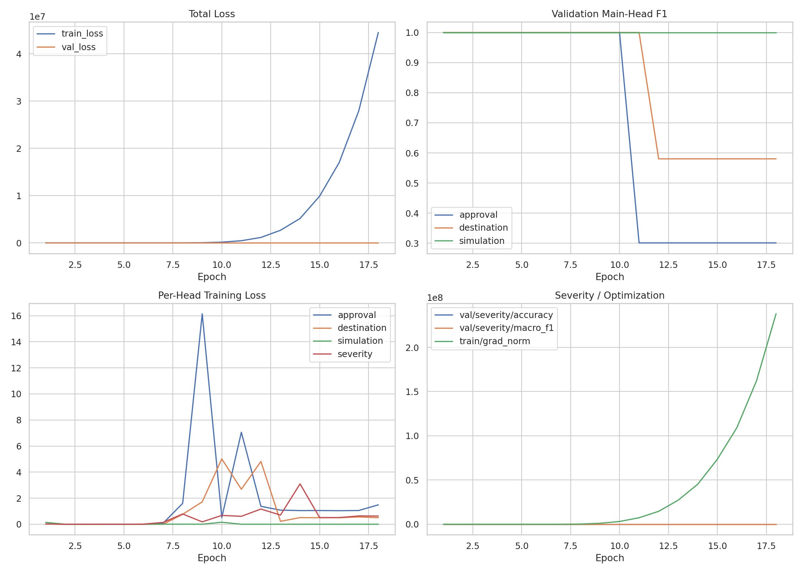
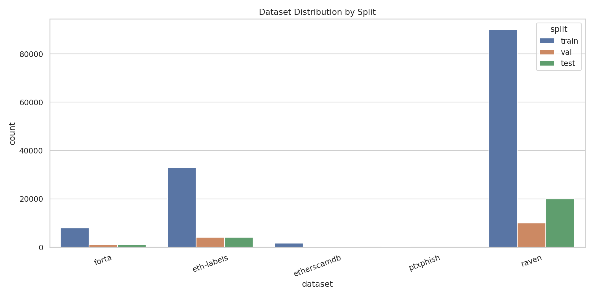
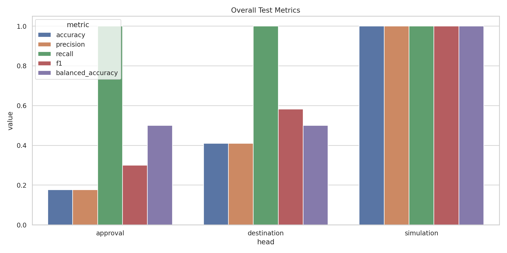
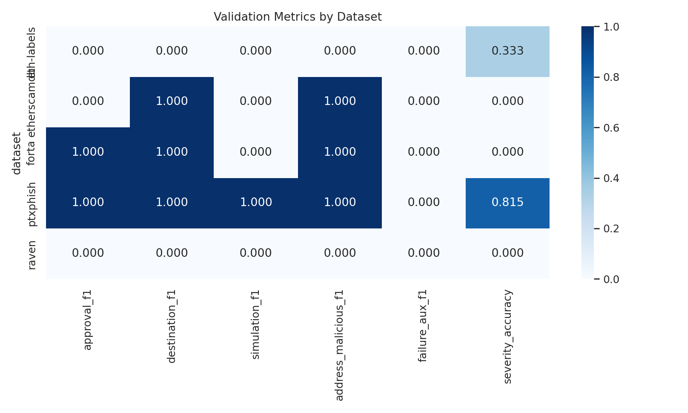

| Size profile | max |
|---|---|
| Training duration (s) | 5198.8801 |
| Severity accuracy | 0.3364 |
| Severity macro F1 | 0.1715 |
| Log path | /mnt/data3/luyiheng/ChainSentry/backend/app/ml/artifacts/graph-model-metrics-training.log |
| JSONL log path | /mnt/data3/luyiheng/ChainSentry/backend/app/ml/artifacts/graph-model-metrics-training.jsonl |



